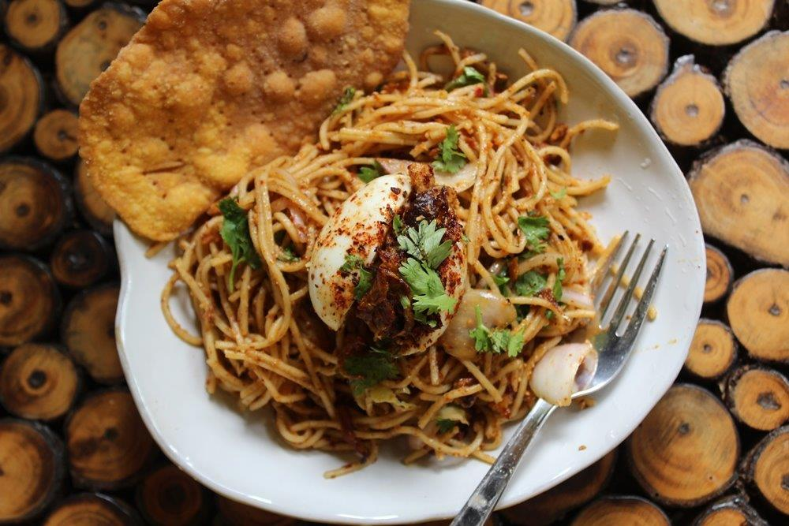

Atho
Atho, a popular Burmese noodle dish which is easy to make and has so many levels of flavour in it. The noodle dish itself is spicy, tangy and nutty which makes a satisfying meal when served with egg bhejo. Making authentic atho at home has few steps but the end product is so worth it.

Ingredients
- For Cooking Noodles
- 200 grams Egg noodles
- 2 tsp Salt
- Water as needed
- Fried Onion & Garlic
- 1 cup Oil
- 2 large Onions sliced thinly
- 20 cloves Garlic chopped finely
- For Roasted Peanut powder
- 3 tbsp Peanuts
- 3 tbsp Roasted Gram Dal
- For Roasted Red Chilli Flakes
- 10 no Dry Red Chillies
- For Bhejo Crisp
- 1 cup Gram Flour
- ½ cup Rice flour
- 1 tsp Turmeric Powder
- 1 tsp Red chilli Powder
- 1 tbsp Fried Onion Garlic Oil
- ¼ tsp Asafoetida
- 1 tsp Salt
- For Atho
- 1 medium Onion sliced
- 1 cup Cabbage shredded
- 2 tbsp Tamarind Pulp
- 2 tbsp Lemon Juice
- ¼ cup Coriander leaves
Directions
- Heat oil in a pan, add in onions and fry till golden. strain and set aside. Now add in garlic and fry till crispy. strain and set aside. Reserve the fried onions and garlic oil.
- Dry roast dry red chillies for few minutes. Cool them down and crush them coarsely. Dry roast peanuts and gram dal and crush them coarsely. Set aside.
- Boil noodles in salted boiling water as per package directions. Strain and rinse in cold water. Toss the noodles in little oil and Set aside.
- Now make bhejo. Take gram flour, rice flour, salt, asafoetida, fried garlic and onion oil, red chilli powder, turmeric powder and mix well. Add in water and make a dough. Take small portion of dough, roll it thin, prick holes using a fork. Drop in oil and fry till golden and crispy. Drain and set aside.
- Take a large mixing bowl. Add noodles, fried onions, fried garlic, roasted chilli powder, roasted peanuts and gram dal powder, tamarind juice, salt water, lemon juice, cabbage, onions, coriander leaves and fried garlic onion oil. Toss well. Add in crushed bhejo crisp and toss well.
- Serve with bhejo and egg bhejo.
Tips
You can cook the noodles in advance and use when needed, make sure you toss the noodles in some oil to prevent sticking.
You can even fry onions and garlic a day in advance. Store in an air tight container.
Always fry garlic in low heat so it won't get bitter.
Roasted red chilli powder can be made in bulk and stored in air tight container.
You can add any ingredients more or less depending on your taste.
Return Home Page